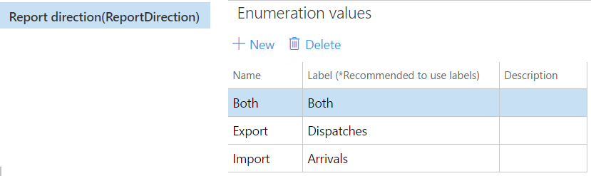
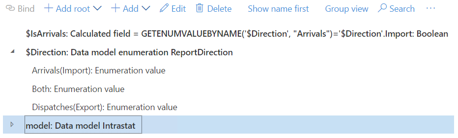
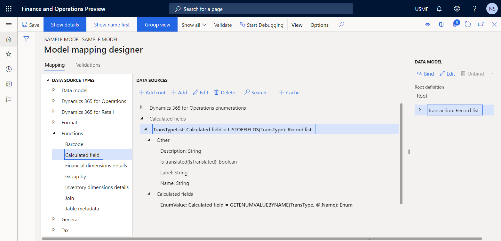
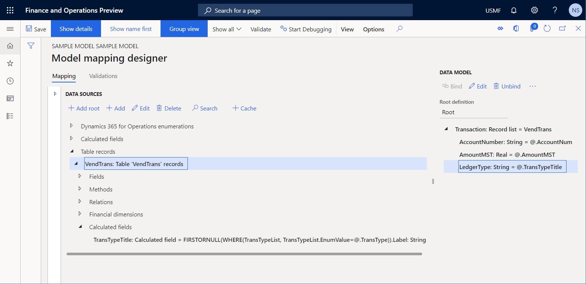
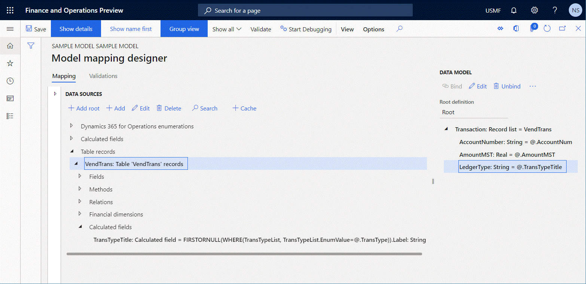

GETENUMVALUEBYNAME EB-Funktion
[!include[banner](../includes/banner.md)]Die Funktion GETENUMVALUEBYNAME sucht nach dem bestimmten Wert Enum in der angegebenen Aufzählungsdatenquelle unter Verwendung des Aufzählungsnamens, der mit dem Wert String angegeben ist. Wenn der Wert Enum gefunden wird, gibt die Funktion ihn zurück. Andernfalls gibt die Funktion den Aufzählungswert Null zurück.
Syntax
GETENUMVALUEBYNAME (enumeration data source path, enumeration value text)
Argumente
enumeration data source path: Aufzählung
Der gültige Pfad einer Datenquelle eines der folgenden Aufzählungstypen:
- Modellenumeration für die elektronische Berichterstellung (EB)
- EB-Formatenumeration
- Microsoft Dynamics 365 Finance-Enumeration
enumeration value text: String
Ein Zeichenfolgewert, der den Namen eines einzelnen Aufzählungswerts darstellt.
Rückgabewerte
Nullbar Enum
Der resultierende Aufzählungswert.
Anwendungshinweise
Es wird keine Ausnahme ausgelöst, wenn ein Wert Enum nicht unter Verwendung des Namens des Aufzählungswerts gefunden wird, der mit dem Wert String angegeben ist.
Beispiel 1
In der folgenden Abbildung wird die Aufzählung ReportDirection in einem Datenmodell eingeführt. Beachten Sie, dass Beschriftungen für Enumerationswerte definiert werden.

Die folgende Abbildung zeigt diese Details an:
- Die Datenquelle $Direction wird in einem EB-Bericht konfiguriert. Diese Datenquelle wird basierend auf der Modellenumeration ReportDirection konfiguriert.
- Der Ausdruck
$IsArrivalsist dazu konzipiert, die auf der Modellenumeration basierende Datenquelle $Direction als Parameter dieser Funktion zu verwenden. - Der Wert dieses Vergleichswerts lautet TRUE.

Beispiel 2
Die Funktionen GETENUMVALUEBYNAME und LISTOFFIELDS ermöglichen das Abrufen von Werten und Bezeichnungen unterstützter Enumerationen als Textwerte. (Die unterstützten Enumerationen sind Anwendungsenumerationen, Datenmodellenumerationen und Formatenumerationen.)
In der folgenden Abbildung wird die Datenquelle TransType in einer Modellzuordnung eingeführt. Diese Datenquelle bezieht sich auf die Anwendungsenumeration LedgerTransType.

Die folgende Abbildung zeigt die Datenquelle TransTypeList, die in einer Modellzuordnung konfiguriert ist. Diese Datenquelle wird basierend auf der Anwendungsenumeration TransType konfiguriert. Die Funktion LISTOFFIELDS wird verwendet, um alle Enumerationswerte als Liste von Datensätzen zurückzugeben, die Felder enthalten. Auf diese Weise werden die Details jedes Enumerationswerts angezeigt.
Note
Das Feld EnumValue ist für die Datenquelle TransTypeList konfiguriert, wofür der Ausdruck GETENUMVALUEBYNAME(TransType, TransTypeList.Name) verwendet wird. Dieses Feld gibt einen Enumerationswert für jeden Datensatz in dieser Liste zurück.

Die folgende Abbildung zeigt die Datenquelle VendTrans, die in einer Modellzuordnung konfiguriert ist. Diese Datenquelle gibt Lieferantentransaktionsdatensätze aus der Anwendungstabelle VendTrans zurück. Der Sachkontotyp jeder Transaktion wird durch den Wert im Feld TransType definiert.
Note
Das Feld TransTypeTitle ist für die Datenquelle VendTrans konfiguriert, wofür der Ausdruck FIRSTORNULL(WHERE(TransTypeList, TransTypeList.EnumValue = @.TransType)).Label verwendet wird. Dieses Feld gibt die Bezeichnung eines Enumerationswerts der aktuellen Transaktion als Text zurück, wenn dieser Enumerationswert verfügbar ist. Andernfalls wird eine leere Zeichenfolge zurückgegeben.
Das Feld TransTypeTitle ist an das Feld LedgerType eines Datenmodells gebunden, mit dem diese Informationen in jedem EB-Format verwendet werden können, das dieses Datenmodell als Datenquelle verwendet.

Die folgende Abbildung zeigt, wie Sie den Datenquellen-Debugger verwenden können, um die konfigurierte Modellzuordnung zu testen.

Das Feld LedgerType eines Datenmodells legt erwartungsgemäß Bezeichnungen von Transaktionstypen offen.
Wenn Sie diesen Ansatz für eine große Menge von Transaktionsdaten verwenden möchten, müssen Sie die Ausführungsleistung berücksichtigen. Weitere Informationen finden Sie unter Überwachen der Ausführung von EB-Formaten zur Behebung von Leistungsproblemen.
Zusätzliche Ressourcen
Überwachen der Ausführung von ER-Formaten zur Behebung von Leistungsproblemen